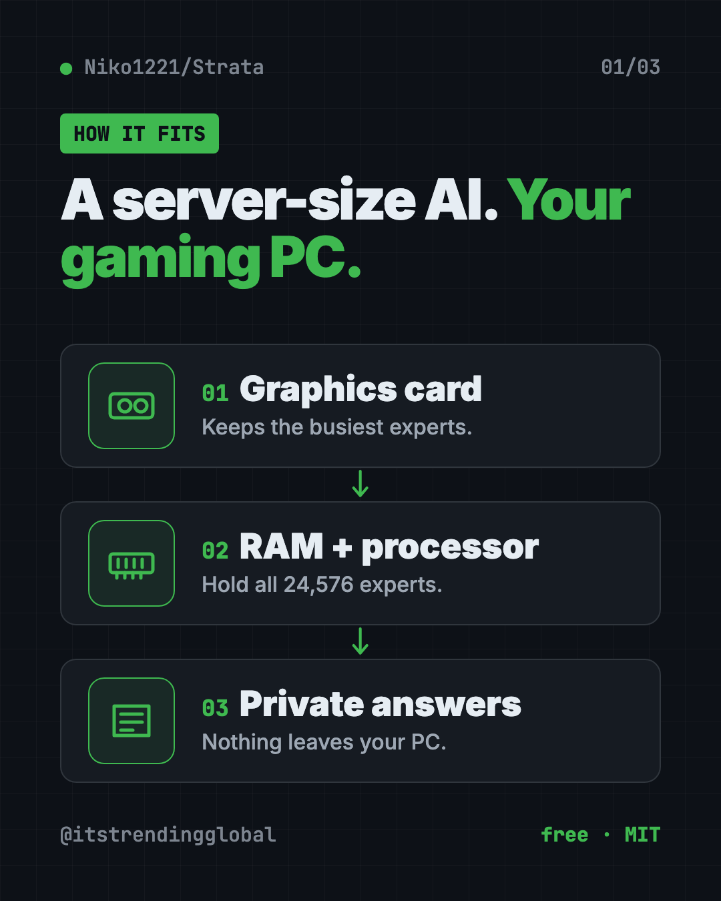
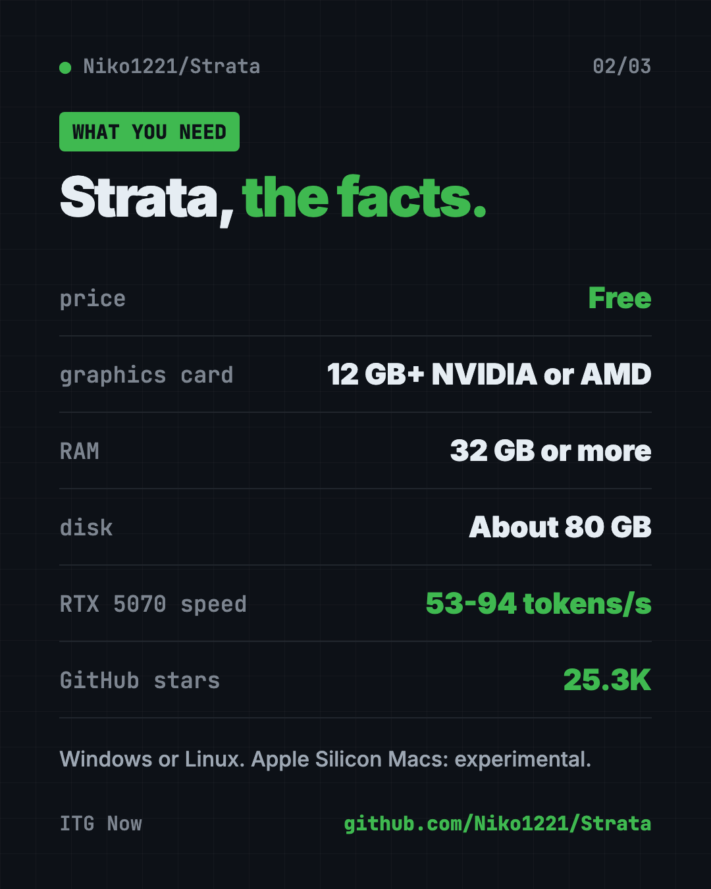
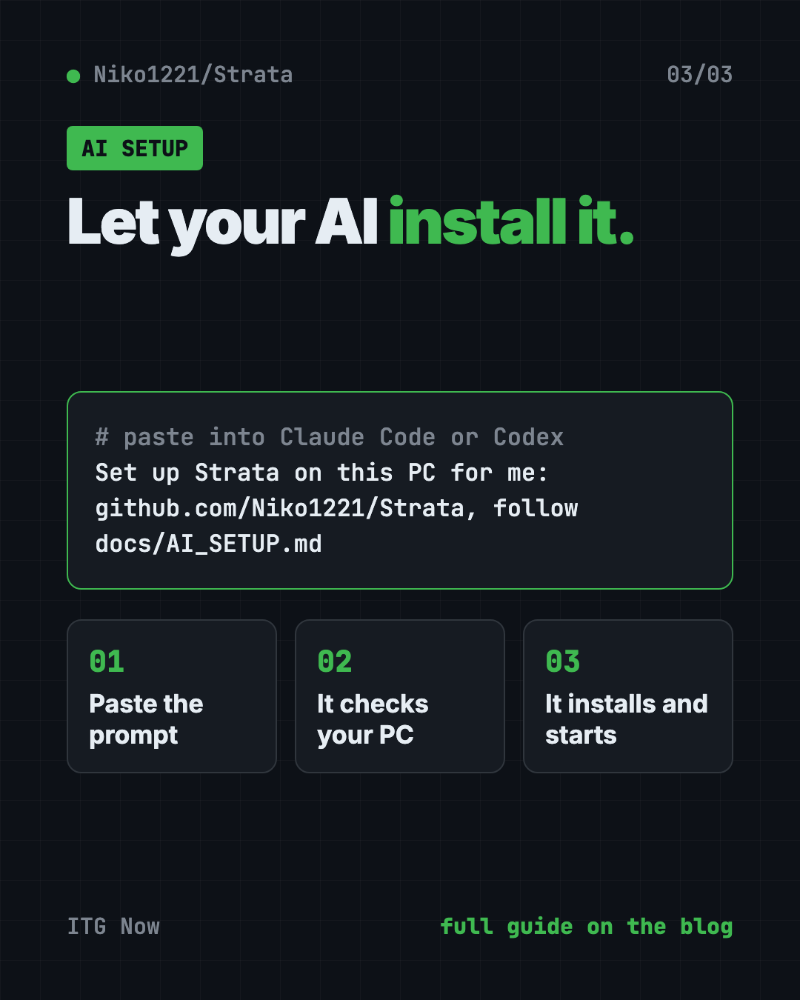

Strata: Run Big Local AI on a Gaming PC, Free
- Published 15 Oct 2026
- Updated 16 Oct 2026
- 7 min read
- License MIT
- By the ITG Now team
Strata is a free tool that runs a big, smart local AI on a gaming PC, so your chats never leave your computer. It sets up Qwen3.8-Flash-Next, a 125-billion-parameter model that normally needs a server.
If you have a decent graphics card and want a private ChatGPT-style helper with no monthly bill, this guide shows what you need, how to install it, and what to expect.
Key takeaways
- Free and open source. MIT license. A tip jar, but no paid plan.
- Private. The model runs on your own PC. Nothing leaves it.
- Needs real hardware: an NVIDIA or AMD graphics card with 12 GB or more, 32 GB of RAM and about 80 GB of disk space.
- Fast enough to chat. On an RTX 5070, the makers measured 53 to 94 tokens per second, faster than you can read.
- Works with your apps. Plug it into Claude Code, Codex or any app that talks to OpenAI's API.
What is Strata?
Strata is an installer and engine. It puts a large AI model on your own computer and makes it run well.
The model is Qwen3.8-Flash-Next from the Qwen team. The README says it chats, writes code, reads pictures and works with your apps and coding agents.
Models this big usually live on servers with hundreds of gigabytes of graphics memory. Your graphics card has 12 to 24 GB. So how does it fit?

How does Strata fit a huge model on a normal PC?
The README uses a kitchen idea. Things you use all the time stay on the counter. The rest waits in the pantry.
- The model is a team of 24,576 small "experts." Each word only needs 10 of them.
- Your graphics card keeps the few thousand experts used most often.
- Your RAM holds all of them, and your processor works on the rest at the same time.
- Your SSD holds a big lookup table.
It also uses a trick called "guess, then check." A small helper guesses the next few words. The big model checks them all at once. You get the same answer 1.6 to 1.8 times sooner.
How to use Strata (real examples)
- Private writing help. Draft emails, reports or cover letters without sending your words to a company's server.
- A coding helper with no meter running. Point Claude Code or Codex at Strata and code without per-message costs.
- Work with sensitive files. Ask questions about contracts or notes that you'd rather keep off the internet.
- Read pictures. Turn on image support during setup, then attach a screenshot or photo and ask about it.
- Use it from your phone. Strata can serve other devices on your home network. Always set a password-style key when you do.
💡 Tip: In the chat menu, set "thinking" to off for quick answers and high for hard questions. Off is the fastest.
What PC do you need for Strata?
This is the big catch. Strata needs a fairly strong gaming PC.
| Part | What the README asks for |
|---|---|
| Graphics card | NVIDIA RTX 20, 30, 40 or 50 series, or a supported AMD Radeon card, with 12 GB of VRAM or more |
| RAM | 32 GB or more. 64 GB runs every size |
| Disk | About 80 GB free, ideally an SSD |
| System | Windows 10 or 11, or Linux, with a current graphics driver |
Apple Silicon Macs (M1 to M5) are supported as an experimental option, built on your Mac by the setup script. Older cards and Intel Arc have community guides too.
How fast is Strata?
The makers tested two ordinary gaming PCs. A token is about three quarters of a word.
- NVIDIA RTX 5070 (12 GB), 64 GB RAM: 53 to 94 tokens per second, depending on the model size.
- AMD RX 9070 XT (16 GB), 47 GB RAM: 44 to 60 tokens per second.
The README says 60 tokens per second is faster than you can read. Bigger cards should be faster still.
Strata at a glance
| Price | Free |
| Works offline | Yes, after the one-time model download |
| Platforms | Windows, Linux; Mac (Apple Silicon) experimental |
| License | MIT (the model has its own license) |
| Download size | About 70 GB for the model |
| Speed | 53 to 94 tokens per second on an RTX 5070 |
| Best for | Gamers and builders who want a private, free AI helper |

How to install Strata
These steps come from the Strata README.
- Download Strata as a ZIP from its GitHub page and unzip it. Or clone it with Git:
git clone https://github.com/Niko1221/Strata.git
- Start the installer. On Windows, double-click
START-HERE.bat. On Linux, open the Strata folder in Terminal and copy and paste this:
./setup.sh
- Answer a few questions. Which model size, how much text it should keep in mind, and whether it should read pictures. Press Enter each time for the recommended answer.
- Wait for the download. It's about 70 GB. If it stops, run the installer again and it picks up where it left off.
- Start chatting. Your browser opens the Strata app at
http://127.0.0.1:8080.
⚠️ Heads up: While the model starts, your PC can be slow or stop responding for 1 to 3 minutes. Strata loads 35 to 55 GB into memory. The README says this is normal, so don't close the window.
On a Mac (M1 to M5, macOS 15 or newer)? First install Apple's Command Line Tools once. Copy and paste this:
xcode-select --install
Then run ./setup.sh in the Strata folder. It builds the Mac engine in about 7 minutes.
Next time, just run START-HERE.bat or ./setup.sh again. It starts right away and downloads nothing twice.
Let Claude or Codex set it up for you
Claude Code and OpenAI Codex are AI helpers that run in your Terminal. They can do setup steps for you while you approve each one. Strata's README even includes a ready prompt.
Copy and paste this:
Set up Strata on this PC for me: https://github.com/Niko1221/Strata - follow docs/AI_SETUP.md in that repository.
The README says it checks your graphics card, RAM and disk, picks the model that fits, then installs and starts it.
Then try asking:
Connect Claude Code to my local Strata server at http://127.0.0.1:8080.
My PC has 48 GB of RAM. Which Strata model size should I use, and why?
Run Strata's benchmark and explain the results in plain English.

Our take
Strata makes something that sounded impossible feel normal: a huge AI model on a home gaming PC, free and private. If you already own the hardware, it's an easy win.
What we like:
- Free, open and fully private.
- A friendly installer that picks the right size for you.
- Works with Claude Code, Codex and OpenAI-style apps.
- Honest speed numbers measured on real gaming PCs.
- The download resumes if it stops.
What to watch for:
- You need a strong PC: 12 GB graphics card, 32 GB RAM, 80 GB disk.
- The first start can freeze your PC for a few minutes.
- It answers one request at a time by default.
- Mac support is still experimental.
- The model and some parts have their own licenses.
Want other ways to run AI at home? Read our guide to Colibri for running large AI models locally, or Project NOMAD, an offline knowledge server. Pair Strata with Hermes Agent, a free self-improving AI agent. Strata also made our top 5 GitHub repos of October 2026.
FAQ
Is Strata free?
Yes. Strata is free and open source under the MIT license. The makers accept tips, but there's no paid plan.
Can I run local AI on a gaming PC with 8 GB of VRAM?
Not with Strata's normal setup. It needs a graphics card with 12 GB of VRAM or more. Some older cards have experimental community guides.
Does Strata send my chats anywhere?
No. The README says nothing leaves your PC.
Can I use Strata with Claude Code?
Yes. Point Claude Code at http://127.0.0.1:8080 using its base URL setting, and it talks to your local model.
Why did my PC freeze when Strata started?
That's normal the first time. Strata loads 35 to 55 GB into memory. Wait and don't close the window.
Get Strata: github.com/Niko1221/Strata
More free local ai models tools
- Colibri Colibri is a free tool to run large AI models locally on the computer you already own. No graphics card needed: it reads most of the model from disk.
Latest AI news
- Meta gives away its big Muse Spark AI for free
- NVIDIA releases Kumo Forecast time-series model
- OpenAI brings its AI models to Google Cloud
- SimReady Central: free 3D asset library for robotics
Keep reading

VoiceStudio: Free ElevenLabs Alternative
VoiceStudio is a free ElevenLabs alternative. Clone a voice, dub videos and turn text into speech on your own Mac, Windows or Linux computer.